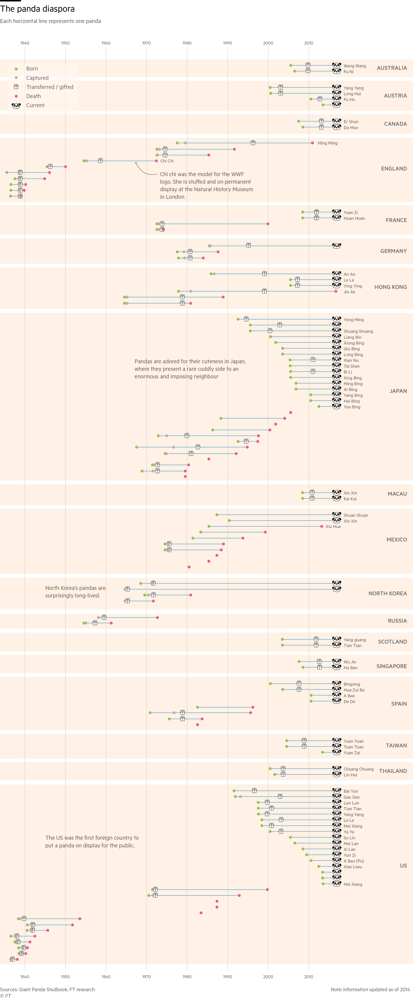

As a recent graduate of a data journalism master's degree (M-I-Z!), I know all too well how overwhelming it is to learn the multitude of languages and software that "you must learn to get a job." I was thrown into the fire, learning D3.js without knowing HTML, CSS, or the fundamentals of JavaScript; Python without really knowing what an API was; and JSON without, well, let's not even go there.
What then happened when it came to actually making something was routine: I became lost, paralyzed sometimes, from not knowing which graphic best suited the story I was trying to tell, which language or software to use, or why I was making a graphic in the first place. Now that I have some spare time, I've started reading a ton of blogs on the decisions others make when making graphics and am picking up something new every time. I see it as the glue that ties everything I learned in school together. So here are five that I'm reading right now to start with and send me anything you come across too.
1) The Chart Doctor by the Financial Times
The Chart Doctor is run by the FT's data visualization editor — aka Alan Smith — and delves into the decisions (and secrets) behind some of the FT's best graphics. You not only find out why it's okay to use pandas in a graphic, but you can also replicate many of their graphics for yourself using their Github repo.

2) Uncharted by Datawrapper
Uncharted is run by dataviz designer Lisa Charlotte Rost who explains when and when not to use certain types of charts while also introducing completely new ones, such as the Marimekko chart. Every once in a while, Rost interviews someone in the industry, most recently Martin Lambrechts and John Burn-Murdoch.
3) SA Visual by Scientific American
What I like most about the SA Visual blog is that there's absolutely no preteniousness in its commentary. That's mostly down to majority-contributor Amanda Montañez, who's also early in her journalism career and her curiosity reflects that. Montañez goes into what graphics to use and not use, but also aggregates what she learns from trips to conferences and other countries.
4) PolicyViz Blog by Jon Schwabish
Jon Schwabish is recognized (on my Twitter, anyway) as THE data viz guru. He specializes in data viz and design at The Urban Institute’s Income and Benefits Policy Center, and delivers expert theory and research. The posts are slightly more high-level than the ones mentioned previously, but it's definitely worth digesting the perspectives of someone coming from a policy rather than journalism background.
5) Medium by Various
As a loyal tweeter, I thought I could get away with using just Twitter to keep up with the latest happenings in data viz. I wish I hadn't been so stubborn. Medium is a blogging platform that a lot of the big players in the industry post articles to. What's great about Medium is that you can see what posts other people have "clapped" (liked) and continue your reading. Definitely worth a browse. My favorites have been from Giorgia Lupi and Kennedy Elliot.
Check out my go-to sports data viz blogs in the next in the series.